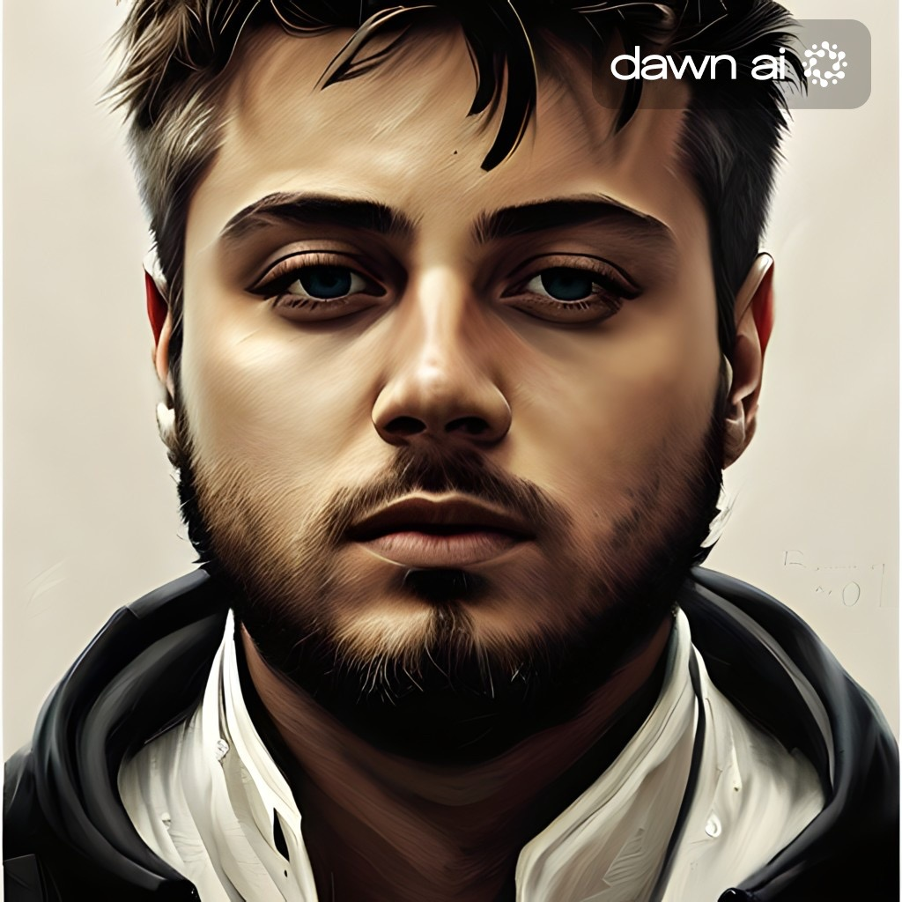

Parcours scolaire
- 2021-2022 4ème secondaire Institut Provincial d'Études Supérieures Wavre
- 2020-2021 4ème secondaire Institut Provincial d'Études Supérieures Wavre
- 2019-2020 3ème Secondaire Institut Provincial d’Études Supérieures Wavre
- 2017-2019 1ère & 2ème Secondaire Godinne
Connaissances
- Français : Langue maternelle
- Anglais : Bon niveau
- Néerlandais : Niveau scolaire
Télécharger mon CV